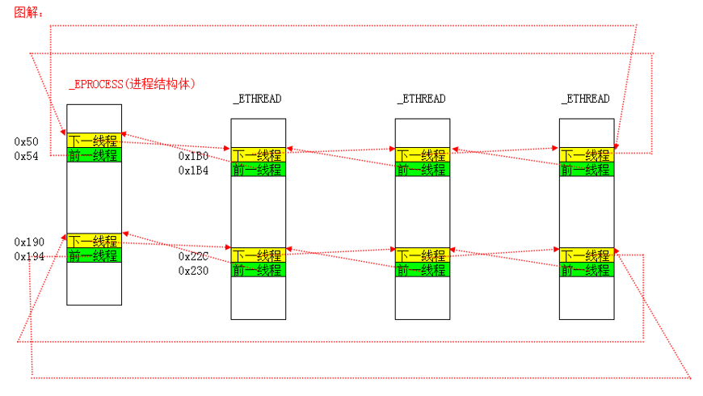
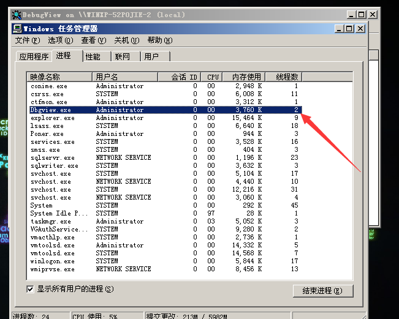
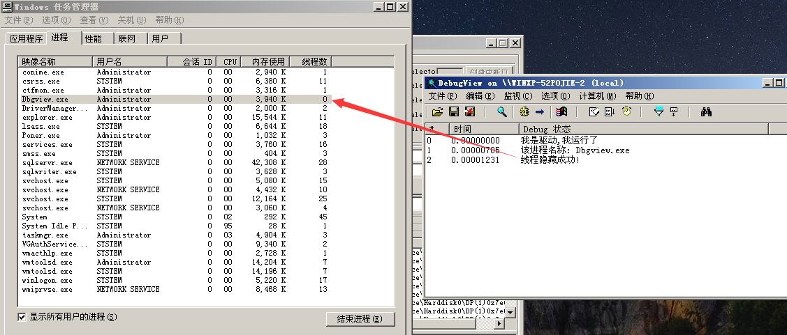
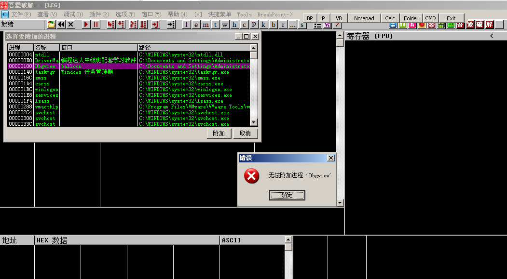

# 线程
Windows 是一款微内核、抢占式多任务、软实时的操作系统。Windows 的任务调度主要以线程为单位进行，线程拥有 33 个优先级，数值为 0~32，其中 0 为最低优先级，32 为最高优先级，最高和最低优先级均保留给系统使用。用户可以使用的优先级为 1～31。
# 线程结构体 ETHREAD
kd> dt _ETHREAD | |
nt!_ETHREAD | |
+0x000 Tcb : _KTHREAD | |
+0x1c0 CreateTime : _LARGE_INTEGER | |
+0x1c0 NestedFaultCount : Pos 0, 2 Bits | |
+0x1c0 ApcNeeded : Pos 2, 1 Bit | |
+0x1c8 ExitTime : _LARGE_INTEGER | |
+0x1c8 LpcReplyChain : _LIST_ENTRY | |
+0x1c8 KeyedWaitChain : _LIST_ENTRY | |
+0x1d0 ExitStatus : Int4B | |
+0x1d0 OfsChain : Ptr32 Void | |
+0x1d4 PostBlockList : _LIST_ENTRY | |
+0x1dc TerminationPort : Ptr32 _TERMINATION_PORT | |
+0x1dc ReaperLink : Ptr32 _ETHREAD | |
+0x1dc KeyedWaitValue : Ptr32 Void | |
+0x1e0 ActiveTimerListLock : Uint4B | |
+0x1e4 ActiveTimerListHead : _LIST_ENTRY | |
+0x1ec Cid : _CLIENT_ID | |
+0x1f4 LpcReplySemaphore : _KSEMAPHORE | |
+0x1f4 KeyedWaitSemaphore : _KSEMAPHORE | |
+0x208 LpcReplyMessage : Ptr32 Void | |
+0x208 LpcWaitingOnPort : Ptr32 Void | |
+0x20c ImpersonationInfo : Ptr32 _PS_IMPERSONATION_INFORMATION | |
+0x210 IrpList : _LIST_ENTRY | |
+0x218 TopLevelIrp : Uint4B | |
+0x21c DeviceToVerify : Ptr32 _DEVICE_OBJECT | |
+0x220 ThreadsProcess : Ptr32 _EPROCESS | |
+0x224 StartAddress : Ptr32 Void | |
+0x228 Win32StartAddress : Ptr32 Void | |
+0x228 LpcReceivedMessageId : Uint4B | |
+0x22c ThreadListEntry : _LIST_ENTRY | |
+0x234 RundownProtect : _EX_RUNDOWN_REF | |
+0x238 ThreadLock : _EX_PUSH_LOCK | |
+0x23c LpcReplyMessageId : Uint4B | |
+0x240 ReadClusterSize : Uint4B | |
+0x244 GrantedAccess : Uint4B | |
+0x248 CrossThreadFlags : Uint4B | |
+0x248 Terminated : Pos 0, 1 Bit | |
+0x248 DeadThread : Pos 1, 1 Bit | |
+0x248 HideFromDebugger : Pos 2, 1 Bit | |
+0x248 ActiveImpersonationInfo : Pos 3, 1 Bit | |
+0x248 SystemThread : Pos 4, 1 Bit | |
+0x248 HardErrorsAreDisabled : Pos 5, 1 Bit | |
+0x248 BreakOnTermination : Pos 6, 1 Bit | |
+0x248 SkipCreationMsg : Pos 7, 1 Bit | |
+0x248 SkipTerminationMsg : Pos 8, 1 Bit | |
+0x24c SameThreadPassiveFlags : Uint4B | |
+0x24c ActiveExWorker : Pos 0, 1 Bit | |
+0x24c ExWorkerCanWaitUser : Pos 1, 1 Bit | |
+0x24c MemoryMaker : Pos 2, 1 Bit | |
+0x250 SameThreadApcFlags : Uint4B | |
+0x250 LpcReceivedMsgIdValid : Pos 0, 1 Bit | |
+0x250 LpcExitThreadCalled : Pos 1, 1 Bit | |
+0x250 AddressSpaceOwner : Pos 2, 1 Bit | |
+0x254 ForwardClusterOnly : UChar | |
+0x255 DisablePageFaultClustering : UChar | |
+0x258 KernelStackReference : Uint4B |
其中第一个成员也是一个结构体 _KTHREAD
kd> dt _KTHREAD | |
nt!_KTHREAD | |
+0x000 Header : _DISPATCHER_HEADER | |
+0x010 MutantListHead : _LIST_ENTRY | |
+0x018 InitialStack : Ptr32 Void | |
+0x01c StackLimit : Ptr32 Void | |
+0x020 Teb : Ptr32 Void | |
+0x024 TlsArray : Ptr32 Void | |
+0x028 KernelStack : Ptr32 Void | |
+0x02c DebugActive : UChar | |
+0x02d State : UChar | |
+0x02e Alerted : [2] UChar | |
+0x030 Iopl : UChar | |
+0x031 NpxState : UChar | |
+0x032 Saturation : Char | |
+0x033 Priority : Char | |
+0x034 ApcState : _KAPC_STATE | |
+0x04c ContextSwitches : Uint4B | |
+0x050 IdleSwapBlock : UChar | |
+0x051 VdmSafe : UChar | |
+0x052 Spare0 : [2] UChar | |
+0x054 WaitStatus : Int4B | |
+0x058 WaitIrql : UChar | |
+0x059 WaitMode : Char | |
+0x05a WaitNext : UChar | |
+0x05b WaitReason : UChar | |
+0x05c WaitBlockList : Ptr32 _KWAIT_BLOCK | |
+0x060 WaitListEntry : _LIST_ENTRY | |
+0x060 SwapListEntry : _SINGLE_LIST_ENTRY | |
+0x068 WaitTime : Uint4B | |
+0x06c BasePriority : Char | |
+0x06d DecrementCount : UChar | |
+0x06e PriorityDecrement : Char | |
+0x06f Quantum : Char | |
+0x070 WaitBlock : [4] _KWAIT_BLOCK | |
+0x0d0 LegoData : Ptr32 Void | |
+0x0d4 KernelApcDisable : Uint4B | |
+0x0d8 UserAffinity : Uint4B | |
+0x0dc SystemAffinityActive : UChar | |
+0x0dd PowerState : UChar | |
+0x0de NpxIrql : UChar | |
+0x0df InitialNode : UChar | |
+0x0e0 ServiceTable : Ptr32 Void | |
+0x0e4 Queue : Ptr32 _KQUEUE | |
+0x0e8 ApcQueueLock : Uint4B | |
+0x0f0 Timer : _KTIMER | |
+0x118 QueueListEntry : _LIST_ENTRY | |
+0x120 SoftAffinity : Uint4B | |
+0x124 Affinity : Uint4B | |
+0x128 Preempted : UChar | |
+0x129 ProcessReadyQueue : UChar | |
+0x12a KernelStackResident : UChar | |
+0x12b NextProcessor : UChar | |
+0x12c CallbackStack : Ptr32 Void | |
+0x130 Win32Thread : Ptr32 Void | |
+0x134 TrapFrame : Ptr32 _KTRAP_FRAME | |
+0x138 ApcStatePointer : [2] Ptr32 _KAPC_STATE | |
+0x140 PreviousMode : Char | |
+0x141 EnableStackSwap : UChar | |
+0x142 LargeStack : UChar | |
+0x143 ResourceIndex : UChar | |
+0x144 KernelTime : Uint4B | |
+0x148 UserTime : Uint4B | |
+0x14c SavedApcState : _KAPC_STATE | |
+0x164 Alertable : UChar | |
+0x165 ApcStateIndex : UChar | |
+0x166 ApcQueueable : UChar | |
+0x167 AutoAlignment : UChar | |
+0x168 StackBase : Ptr32 Void | |
+0x16c SuspendApc : _KAPC | |
+0x19c SuspendSemaphore : _KSEMAPHORE | |
+0x1b0 ThreadListEntry : _LIST_ENTRY | |
+0x1b8 FreezeCount : Char | |
+0x1b9 SuspendCount : Char | |
+0x1ba IdealProcessor : UChar | |
+0x1bb DisableBoost : UChar |
# KTHREAD 主要成员
- +0x000 Header : _DISPATCHER_HEADER
和 KPROCESS 类似，开头是一个 Header，拥有此属性的内核对象可以 “被等待”（WaitForSingleObject）
- +0x018 InitialStack : Ptr32 Void
+0x01c StackLimit : Ptr32 Void
+0x028 KernelStack : Ptr32 Void
线程切换相关
InitialStack 初始栈顶，也可以理解成 ebp0
StackLimit 栈的大小
KernelStack 线程切换时，旧线程的 esp0 存到它的 KernelStack，然后把新线程的 KernelStack 写到 TSS
- +0x020 Teb : Ptr32 Void
TEB，Thread Environment Block，线程环境块。
大小 4KB, 位于用户地址空间。
3 环可以通过 FS:[0] 找到 TEB
- +0x02c DebugActive : UChar
是否处于调试状态
- +0x034 ApcState : _KAPC_STATE
+0x0e8 ApcQueueLock : Uint4B
+0x138 ApcStatePointer : [2] Ptr32 _KAPC_STATE
+0x14c SavedApcState : _KAPC_STATE
APC 相关属性。其中 **+0x034 ApcState : _KAPC_STATE** 的结构如下：
kd> dt _KAPC_STATE | |
nt!_KAPC_STATE | |
+0x000 ApcListHead : [2] _LIST_ENTRY | |
+0x010 Process : Ptr32 _KPROCESS | |
+0x014 KernelApcInProgress : UChar | |
+0x015 KernelApcPending : UChar | |
+0x016 UserApcPending : UChar |
故在 +0x44 的位置是当前线程的进程结构体 EPROCESS 的地址
- +0x02d State : UChar
线程状态：就绪、等待、运行。
- +0x06c BasePriority : Char
其初始值是所属进程的 BasePriority 值 (KPROCESS->BasePriority)，以后可以通过 KeSetBasePriorityThread () 函数重新设定
- +0x070 WaitBlock : [4] _KWAIT_BLOCK
等待哪个对象（WaitForSingleObject）
- +0x0e0 ServiceTable : Ptr32 Void
指向系统服务表基址
- +0x134 TrapFrame
进 0 环时保存环境
- +0x140 PreviousMode : Char
某些内核函数会判断程序是 0 环调用还是 3 环调用的
- +0x1b0 ThreadListEntry : _LIST_ENTRY
双向链表，一个进程所有的线程都挂在一个链表中，挂的就是这个位置，有两个这样的链表

# _ETHREAD 主要成员
- +0x1ec Cid : _CLIENT_ID
进程 ID、线程 ID
- +0x220 ThreadsProcess : Ptr32 _EPROCESS
指向自己所属进程结构体。这个值和 +0x44 那里的值一样。
- +0x22c ThreadListEntry : _LIST_ENTRY
双向链表，一个进程所有的线程都挂在一个链表中，挂的就是这个位置，有两个这样的链表
# 课后实验
断链线程结构体，实现隐藏，并思考为什么断链后线程还能够执行。
并没有写恢复 代码如下：
#include<ntddk.h> | |
VOID DriverUnload(PDRIVER_OBJECT pDriver) { | |
DbgPrint("我是驱动，我卸载了\t\n"); | |
} | |
NTSTATUS _NtThreadHide(PUCHAR lpImageFileName) | |
{ | |
PEPROCESS pEPROCESS; | |
__asm | |
{ | |
mov eax, fs: [0x124] | |
mov eax, [eax + 0x220] | |
mov pEPROCESS, eax | |
} | |
PLIST_ENTRY pHeader = (PCHAR)pEPROCESS + 0x88; | |
PLIST_ENTRY pCur = pHeader; | |
do | |
{ | |
if (strcmp(lpImageFileName, (PCHAR)((ULONG)pCur - 0x88 + 0x174)) == 0) | |
{ | |
PLIST_ENTRY pEThreadHeader1, pEThreadHeader2, pEThreadCur, pEThreadNext; | |
ULONG uSizeOfLIST_ENTRY = sizeof(LIST_ENTRY); | |
lpImageFileName = (PCHAR)pCur + 0xec; | |
DbgPrint("该进程名称: %s\n", lpImageFileName); | |
pEThreadHeader1 = (PCHAR)pCur - 0x88 + 0x50; // 模块链表头 | |
pEThreadHeader2 = (PCHAR)pCur - 0x88 + 0x190; // 模块链表头 | |
pEThreadCur = pEThreadHeader1; | |
do | |
{ | |
pEThreadNext = pEThreadCur->Blink; | |
pEThreadCur->Flink = pEThreadCur; | |
pEThreadCur->Blink = pEThreadCur; | |
pEThreadCur = pEThreadNext; | |
} while (pEThreadHeader1 == pEThreadCur); | |
pEThreadCur = pEThreadHeader2; | |
do | |
{ | |
pEThreadNext = pEThreadCur->Blink; | |
pEThreadCur->Flink = pEThreadCur; // 指向自己，不能直接置为 0, 否则会触发蓝屏 | |
pEThreadCur->Blink = pEThreadCur; | |
pEThreadCur = pEThreadNext; | |
} while (pEThreadHeader1 == pEThreadCur); | |
DbgPrint("线程隐藏成功!\n"); | |
return STATUS_SUCCESS; | |
} | |
pCur = pCur->Blink; | |
} while (pCur != pHeader); | |
return STATUS_ABANDONED; | |
} | |
NTSTATUS DriverEntry(PDRIVER_OBJECT pDriver, PUNICODE_STRING pRegPath) { | |
pDriver->DriverUnload = DriverUnload; | |
DbgPrint("我是驱动,我运行了\t\n"); | |
// 线程断链 | |
if (!NT_SUCCESS(_NtThreadHide("Dbgview.exe"))) | |
{ | |
return STATUS_UNSUCCESSFUL; | |
} | |
return STATUS_SUCCESS; | |
} |

断链后

断链后还可以运行。
尝试用调试器附加：

这个时候 xp 已经卡死了
# Reference
https://blog.csdn.net/weixin_43890959/article/details/114527411
https://blog.csdn.net/Kwansy/article/details/109529264